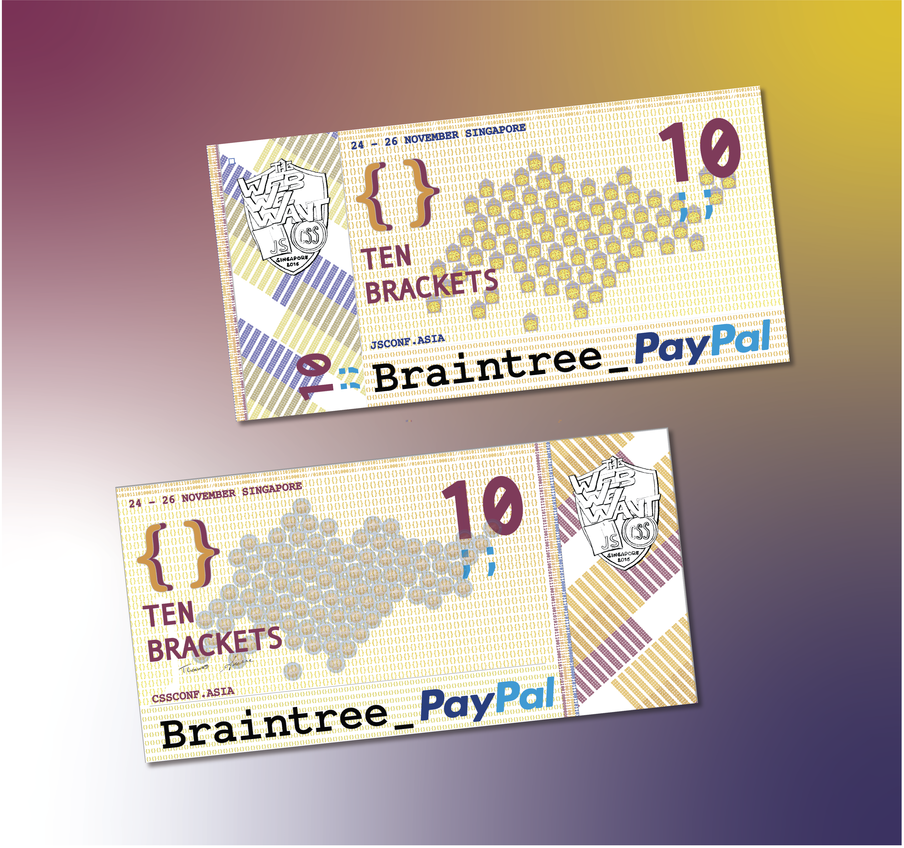
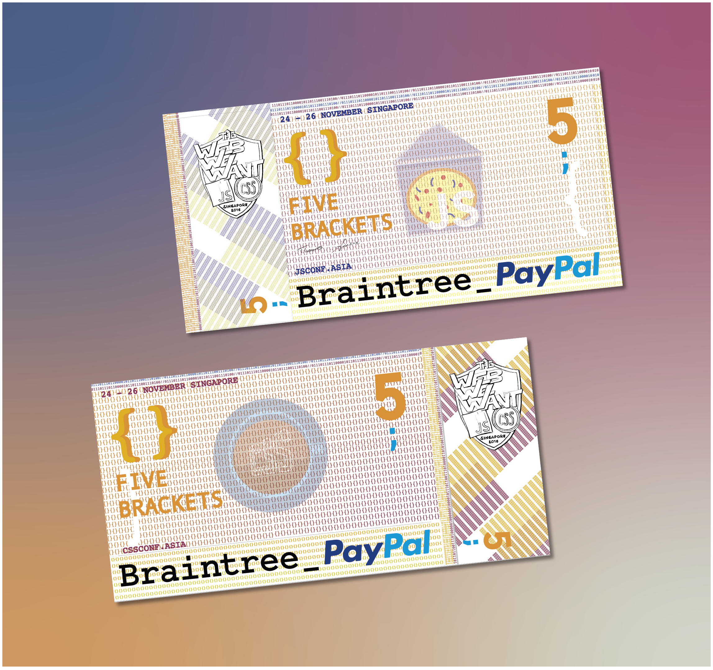

jsconf asia
A currency series for the tech community. Conference designer for JSConf Asia across five years. Each year, a currency-themed illustration system was created as the visual backbone of the conference identity — themed around the things the web developer community runs on: coffee, pizza, and the payment infrastructure that powers it all (Braintree, PayPal). The series accumulated into a coherent design language across five editions of Asia's largest JavaScript conference.

